Mortality
ECON 499: Economics of Inequality
Winter 2018
What are the consequences of inequality?
- Philosophical debates on inequality are hard to resolve
- Can instead focus on outcomes
- Does inequality make people worse off in an objective way?
Chetty et al (2016)
- The Association Between Income and Life Expectancy in the United States, 2001-2014
Life expectancy
- Calculate the mortality rates for the cross section of every age
- Use the mortality rates to calculate life expectancy at any given age
- Alternatively, calculate the percentage of people who survive to a given age
- Compare that to the distribution of income at each age

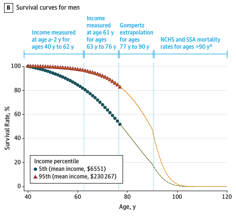
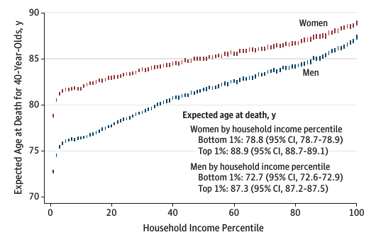
Life expectancy and income
- Men in the top 1% live 14.6 years longer than men in the lowest 1%
- Women in the top 1% live 10.1 years longer than women in the lowest 1%
- Gap between men and women lower at high incomes
- How has this changed over time?
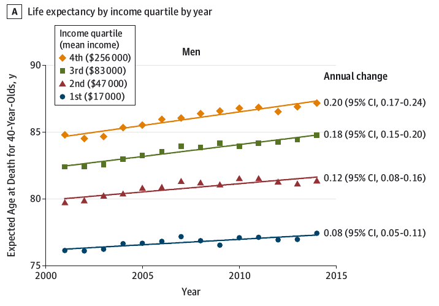


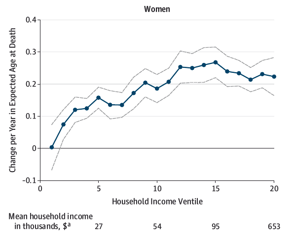
Change in life expectancy
- Life expectancy across most income groups growing
- Growing slowly for people low in the distribution, higher for the wealthy
- Poorest 5% do not appear to be living longer at all

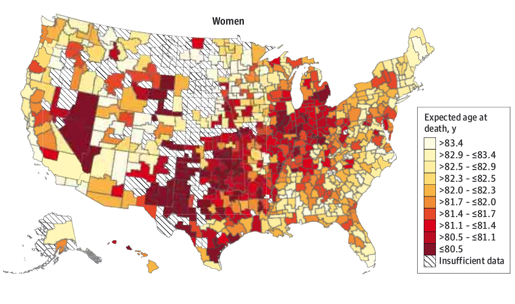
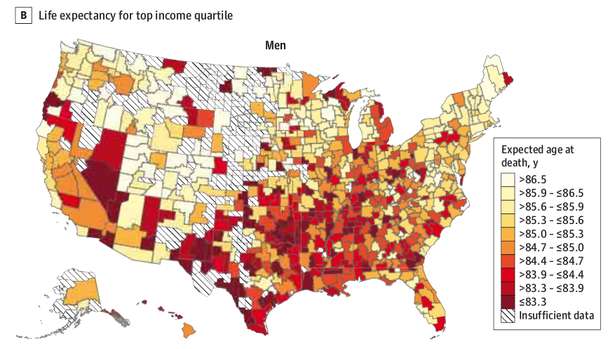
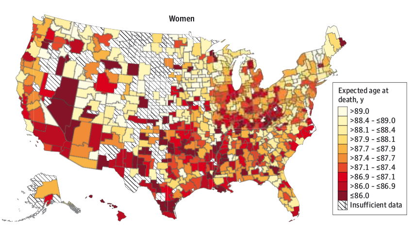
Geography and mortality
- There are large geographic variations in mortality rates
- Low-income people die more frequently in the rust belt, midwest, south, and southeast
- High-income people in coastal areas living longest
Causes
- Geographical variation allows to compare other geographical outcomes
- Calculate correlation between life expectancy in bottom quartiles and local characteristics
- Use top quartile and bottom quartile (top 25%, lowest 25%)
Bottom quartile 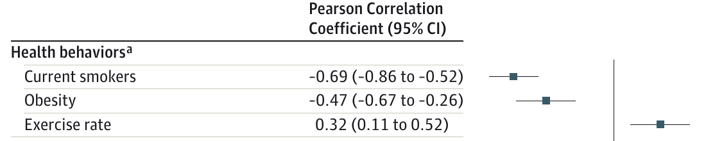 Top quartile 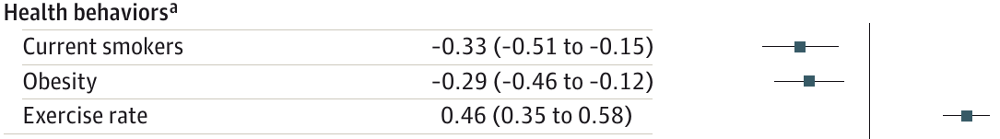
Bottom quartile 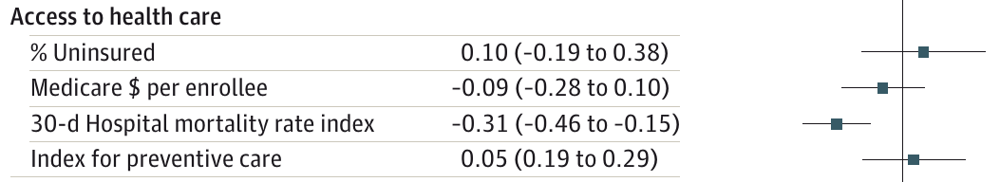 Top quartile 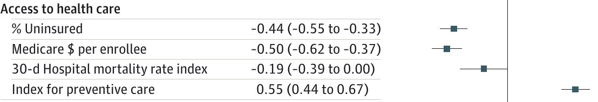
Bottom quartile Top quartile
Bottom quartile
 Top quartile
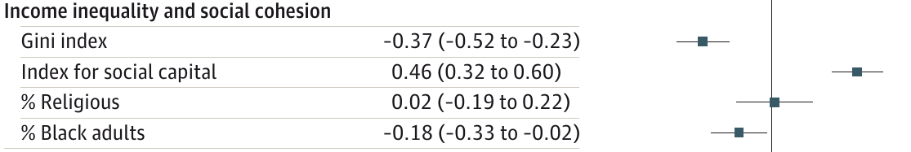
Top quartile
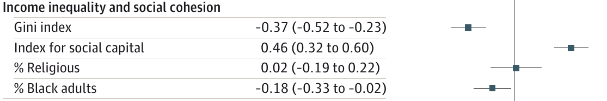
Bottom quartile
 Top quartile
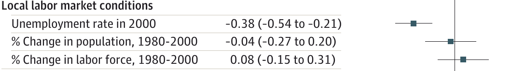
Top quartile
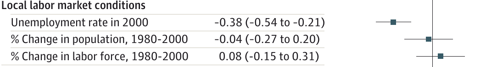
Bottom quartile 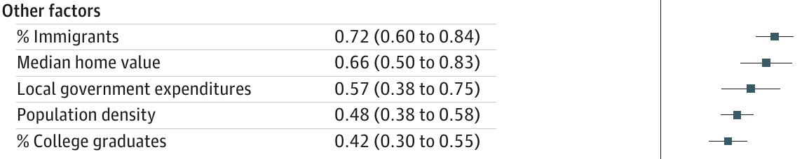 Top quartile 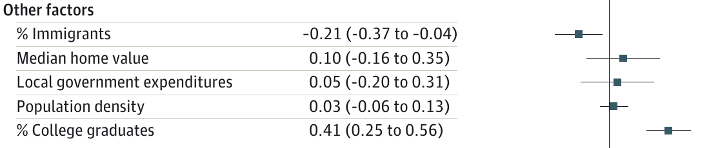
Mechanisms
- We've only described correlations, not causation
- Public policy (smoking bans, public services, etc)
- Peer effects—wealthier, healthier neighbors may induce healthy behavior
- Compositional/sorting
Case and Deaton (2015, 2017)
- Rising morbidity and mortality in midlife among white non-Hispanic Americans in the 21st century (2015)
- Mortality and morbidity in the 21st century (2017)
- Look at mortality by race and gender instead of income
All-cause mortality, ages 45-54
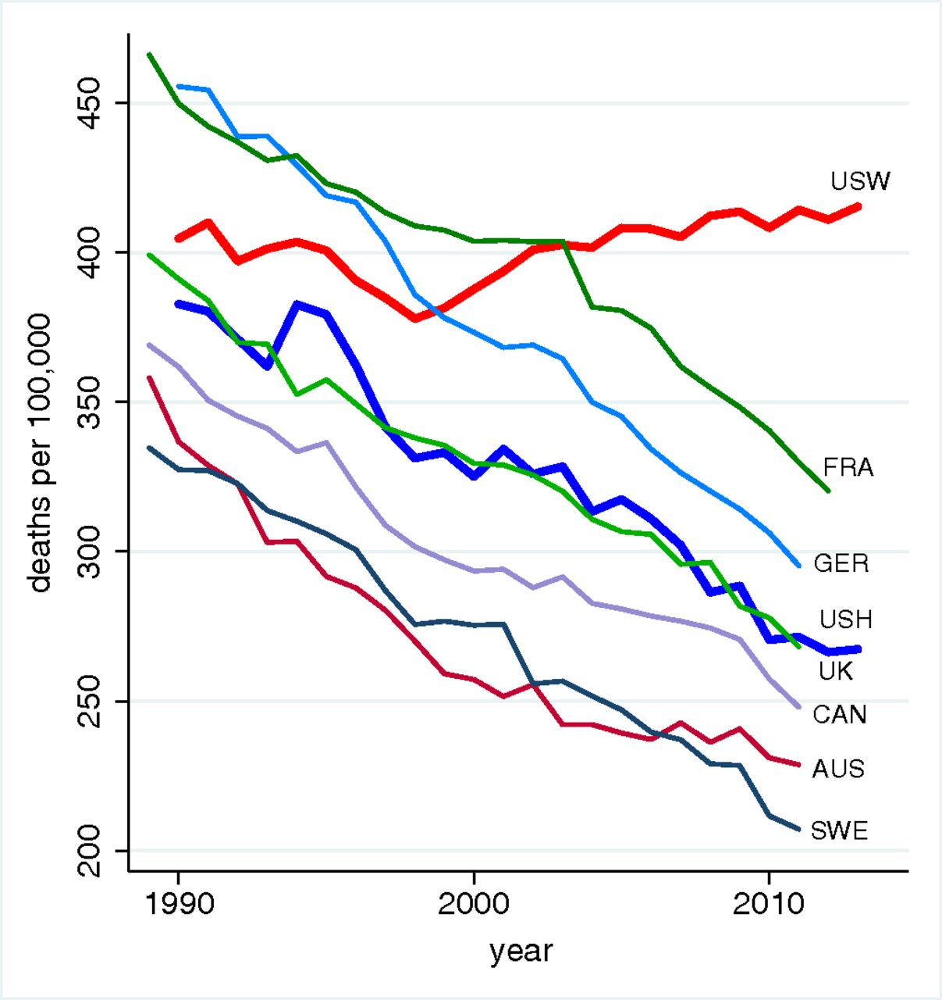
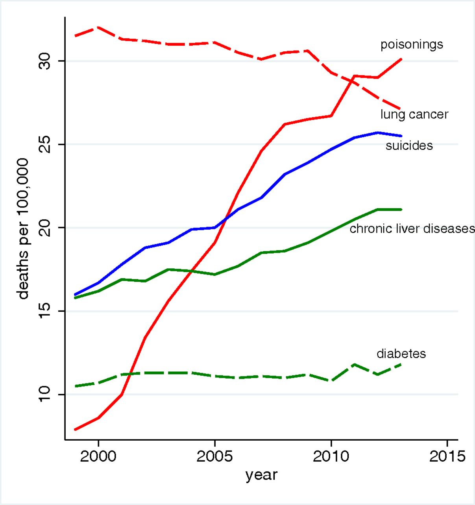
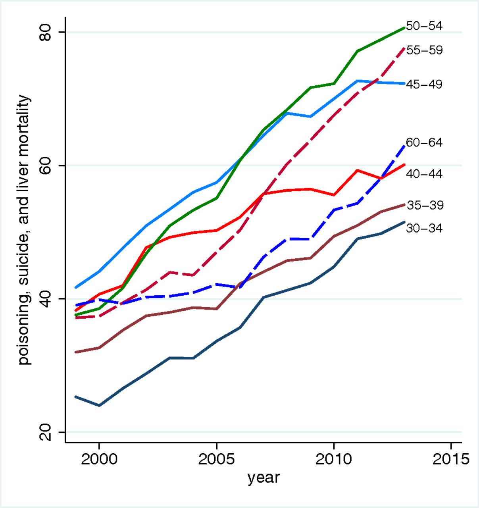
Mid-life mortality
- Deaths due to drug and alcohol poisoning, suicide, and liver disease are increasing for all age groups of non-Hispanic white men
- For middle-age, it has increased enough to reduce overall life expectancy
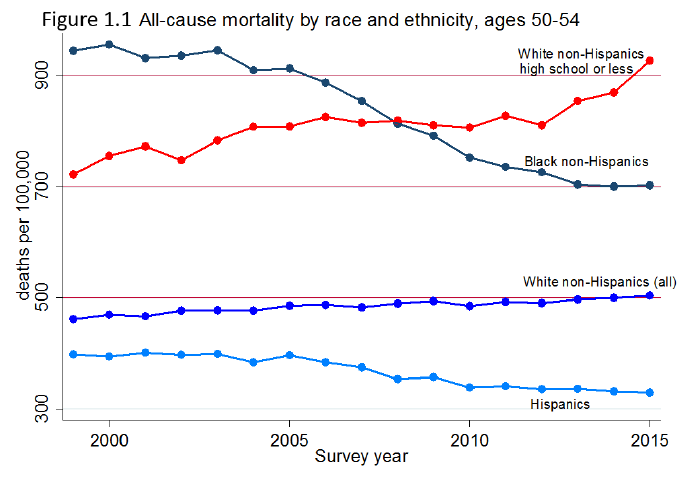


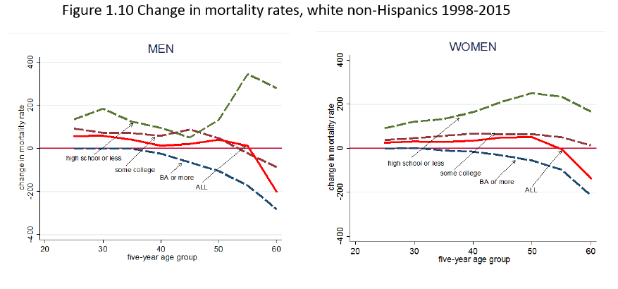
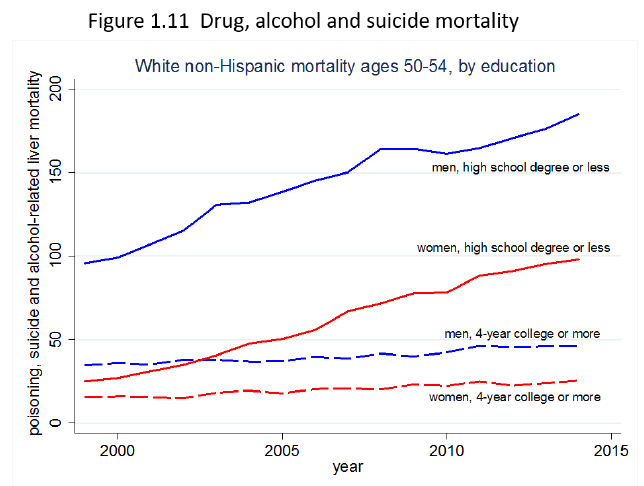
Causes
- Income highly correlated with mortality
- Cannot explain everything, income for whites shows similar patterns as other groups
- Case and Deaton suggest "cumulative deprivation" (fewer prospects in life)

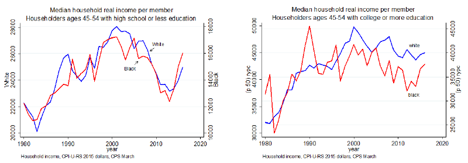
Summary
- Income is highly correlated with life expectancy
- Increasing inequality increases the gap in mortality between rich and poor
- For some groups (non-Hispanic white men) life expectancy is decreasing
- The same people who are losing jobs to trade and automation?
- How do these people vote?